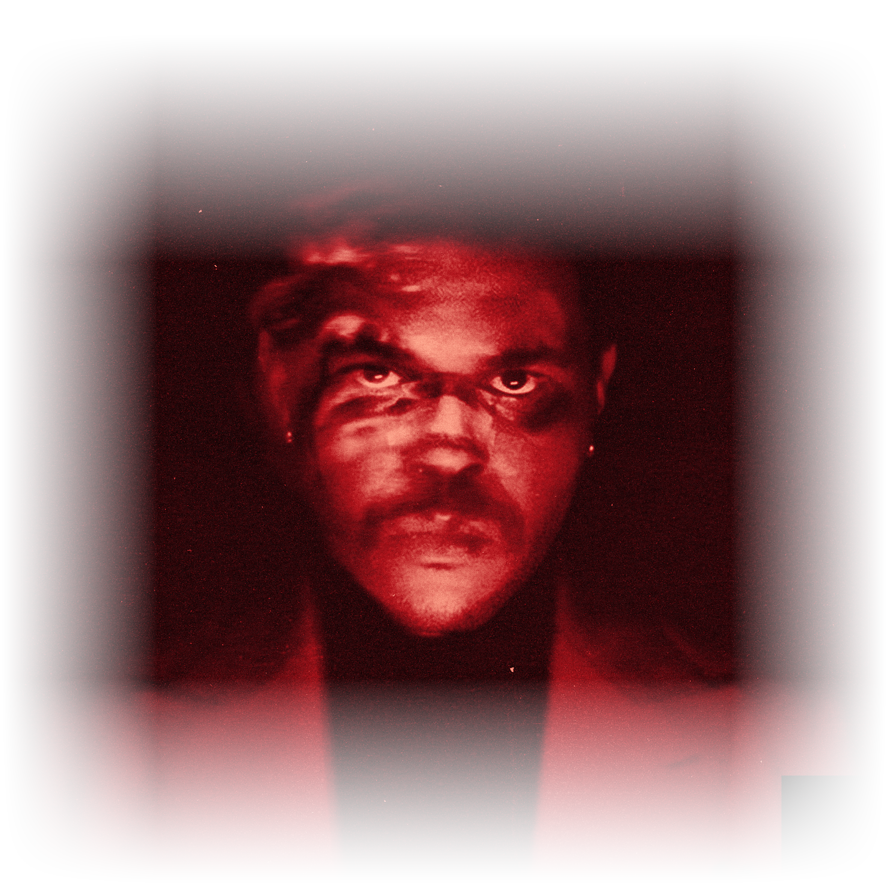
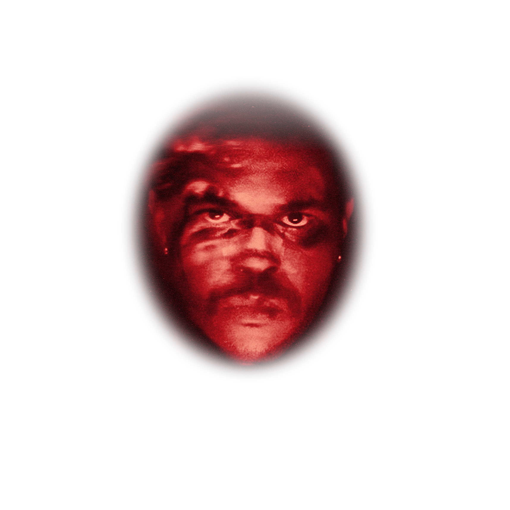

AFTER
HOURS
HOURS

THE WEEKND
It's been way too long
And been way too long
Just want it out of my life
And been way too long
Just want it out of my life
Never need a bitch, I'm what a bitch need
Tryna find the one that can fix me
I've been runnin' through the money, need a hit; please
Why? 'Cause I'm heartless
And I'm back to my ways 'cause I'm heartless
All this money and this pain got me heartless
Low life for life 'cause I'm HEARTLESS
Tryna find the one that can fix me
I've been runnin' through the money, need a hit; please
Why? 'Cause I'm heartless
And I'm back to my ways 'cause I'm heartless
All this money and this pain got me heartless
Low life for life 'cause I'm HEARTLESS